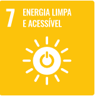

O que é?
São energias que ao serem produzidas e utilizadas preservam o meio ambiente. Em geral não causam poluição do ar ou do solo e é uma fonte de energia renovável, pois pode ser sempre utilizada sem correr o risco de ser esgotada.
O impacto ambiental que a produção e utilização de energias não renováveis aceleram emissões de gases do efeito estufa como o CO2, que aumentam as mudanças climáticas e modifica todo o ecossistema dos seres vivos.
Energia Limpa e Acessível faz parte dos Objetivos de Desenvolvimento Sustentável (ODS) da ONU que incentiva a utilização de energias renováveis em relação ao avanço da economia e ao mesmo tempo seja de fácil acesso para as populações mais vulneráveis.
Tipos de Energia Limpa
Energia Eólica
Energia Solar
Energia Hídrica
Energia da Biomassa
Energia Geotérmica
Energia Maremotriz
Energia do Hidrogénio
Energia Nuclear
Energia Limpa é Acessível?
Essa questão depende de vários fatores sócio-econômicos e ambientais em um determidado contexto.
É possível viabilizar a acessibilidade à energia renovável, com a colaboração de programas de desenvolvimento que levem em conta os interesses socias.